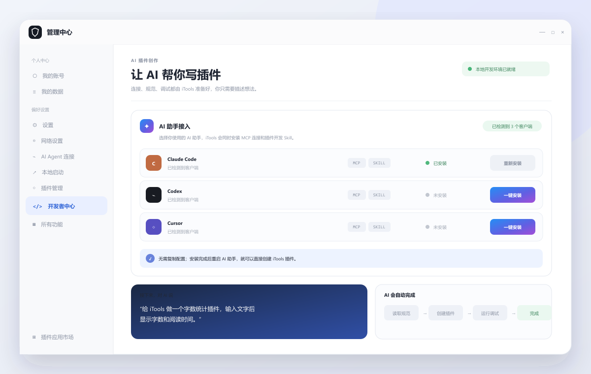

打开 iTools 开发者中心
开发者中心是 AI 创建插件的工作台。打开 iTools，点击右上角头像进入管理中心，然后选择左侧的“开发者中心”。

iTools 会检测本机 AI 客户端，并同时安装 MCP 连接与插件开发 Skill。
AI 助手接入检测客户端，一键安装或更新 MCP 与 Skill。
独立调试环境测试数据与正式插件隔离，不影响日常使用。
运行与日志AI 可以直接运行插件、读取错误并继续修复。
一键安装 MCP 和 Skill
在“AI 助手接入”区域找到你使用的客户端，点击“一键安装”。iTools 会自动完成两部分接入：
让 AI 操作开发者中心可以创建、扫描、运行插件，并读取调试日志。
让 AI 读懂 iTools 插件规范知道目录结构、可用 API、权限和调试方式。
- 1
找到 AI 客户端开发者中心会自动检测 Claude Code、Codex、Cursor 等客户端。
- 2
点击“一键安装”iTools 自动写入本地连接和 Skill，不需要打开配置文件。
- 3
重启 AI 助手看到状态变为“已安装”后重启一次，让新能力生效。
安装一次，之后直接说需求。iTools 更新了开发规范时，也可以回到这里点击“更新”或“重新安装”。
把想做的工具告诉 AI
安装完成后，不必再告诉 AI 连接地址或开发规范。用日常语言描述用途、关键词和想要的功能即可。
请给 iTools 做一个插件：
- 工具用途：[描述要解决的问题]
- 触发关键词：[例如：字数统计]
- 核心功能：[列出 2–4 个功能]
- 是否需要联网：[否 / 是，并说明原因]
创建完成后请自动运行和检查；
如果发现错误，请读取日志并继续修复，直到可以正常使用。
不要提交到插件市场，除非我明确要求。没想好做什么？从这些开始
看着 AI 创建并验证
接入成功后，AI 会在后台按顺序完成这些动作。你不需要输入命令；出现错误时，它会读取日志、修改文件并再次验证。
list_plugins找到 iTools 指定的固定调试目录
rescan让 iTools 重新扫描刚创建的插件
list_plugins确认插件已识别且没有配置错误
run_plugin直接打开插件，检查真实运行效果
read_logs读取运行日志，有问题就继续修复
在 iTools 里直接使用
AI 显示验证通过后，按下 Alt + Space，输入你设置的触发关键词，新工具就会打开。
想分享给其他用户时，再明确告诉 AI 提交插件市场。AI 应先更新版本号并执行预检，只有在你已登录且确认提交后才会发布。
AI 连不上 iTools？
- iTools 与 AI 助手是否为最新版
- 开发者中心是否检测到该客户端
- MCP 和 Skill 状态是否都为“已安装”
- 安装后是否重启了 AI 助手
先在对应客户端一行点击“重新安装”，然后重启 iTools 与 AI 助手。如果系统使用了代理或 VPN，请确保本机地址不会被代理转发。
没有检测到我的 AI 客户端怎么办？＋
先确认 AI 客户端已经安装并至少启动过一次，再重新打开开发者中心。仍未检测到时，请根据开发者中心里的提示选择对应客户端目录；无需自己编写 MCP 配置。
先创建第一个专属工具。
下载 iTools，连接你熟悉的 AI 助手，从一句话开始。